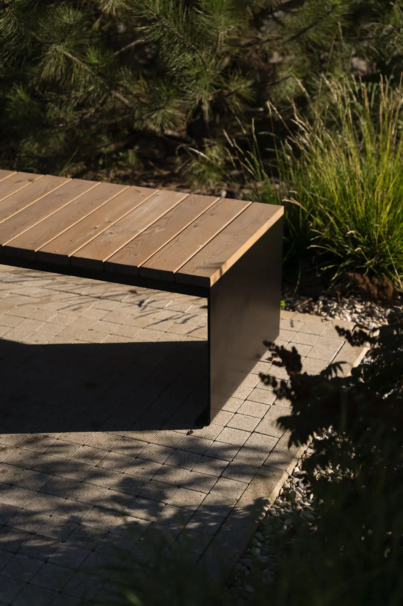
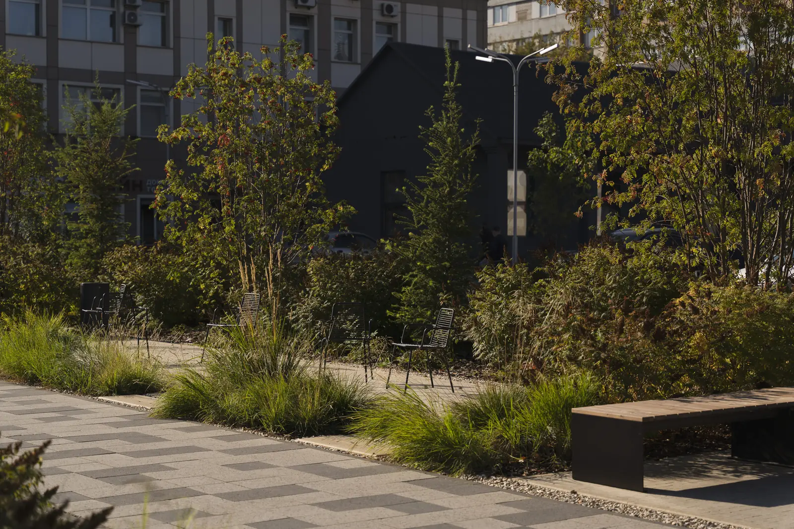
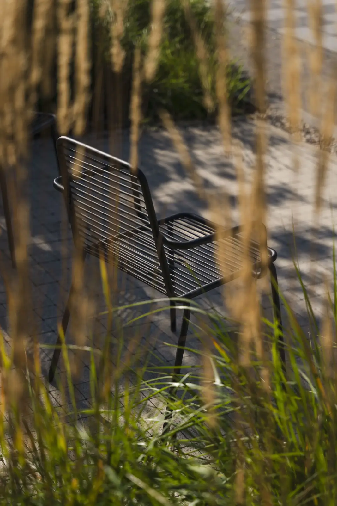
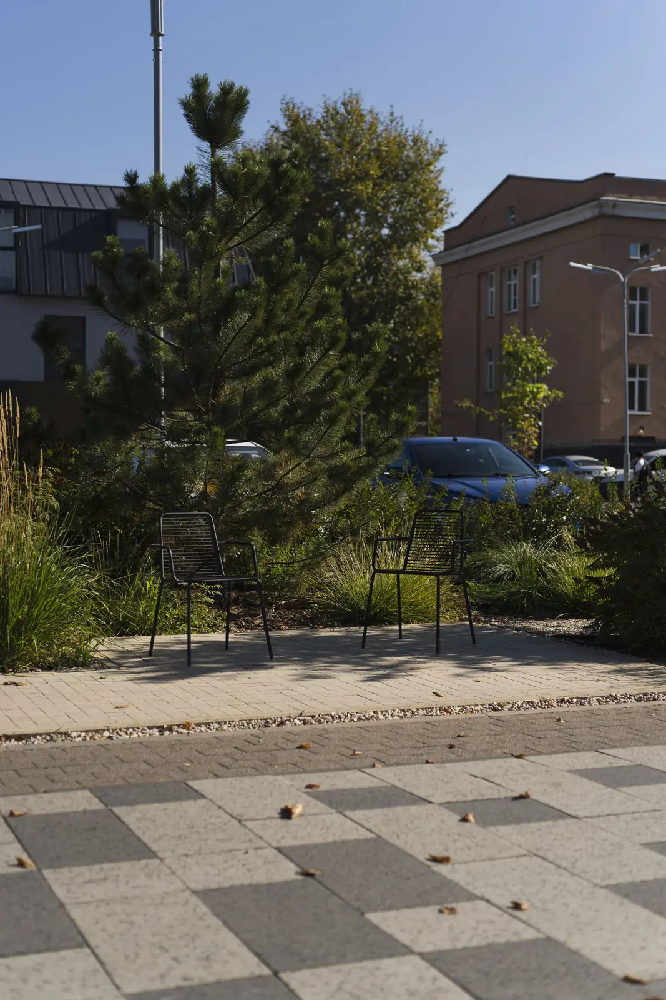
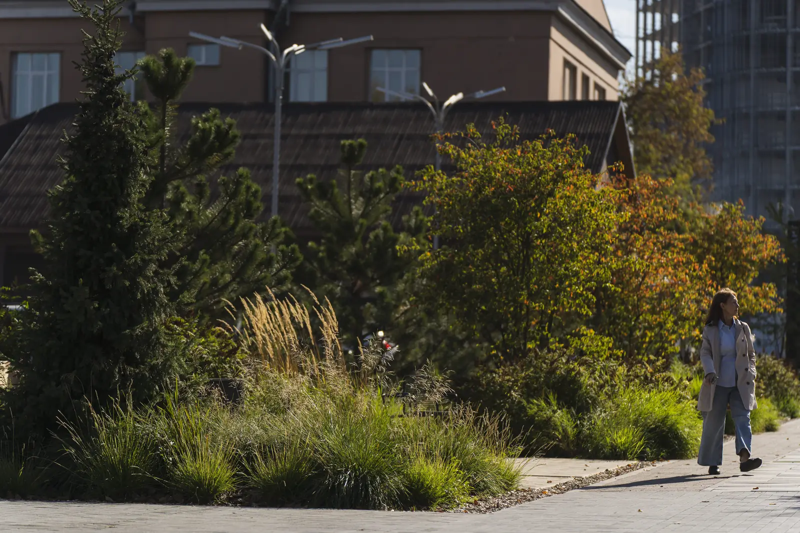
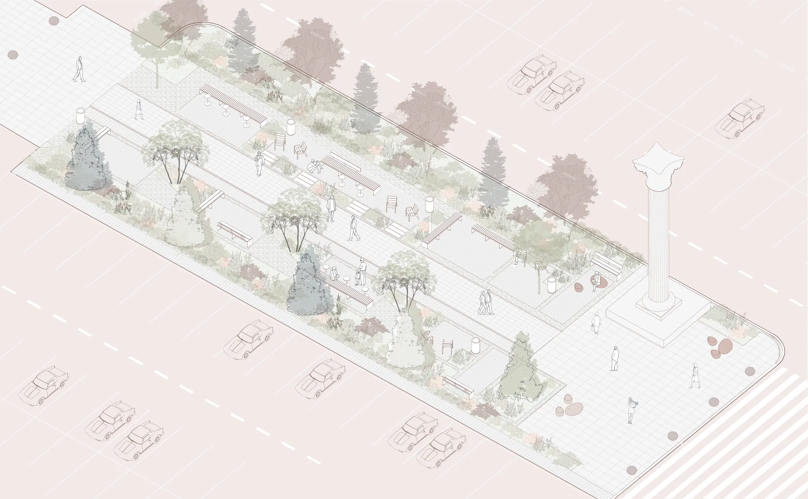

станколит
С 2022 года мы работаем над обликом общественных пространств бывшего завода «Станколит». В первую очередь реализации вошла аллея на Южной площади: на месте парковки появилось зелёное общественное пространство, возвращающее память о советской липовой роще.
Структура нового ландшафта состоит из «комнат» — камерных островков из плитки в окружении лесного контура из лиственниц, клёнов Гиннала, рябин и сосен. Контур деревьев отделяет аллею от парковки и работает с 12-метровой чугунной колонной на площади.
Отсыпка из гравия вокруг островков создаёт ощущение «парящего» ландшафта, а сиденья-камушки благородных бежевых оттенков задают неочевидные места для отдыха.




чертежи и схемы
